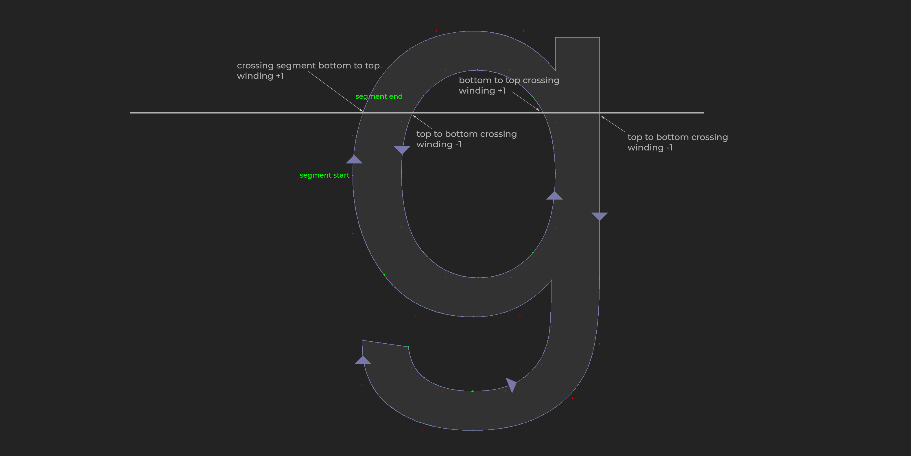

Rasterizing Glyphs
There are a lot of approaches to rasterizing a glyph, we're going to be implementing something similar to what is described in Easy Scalable Text Rendering On the GPU. Some additional resources to consider:
- How the stb_truetype Anti-Aliased Software Rasterizer v2 Works
- Resolution Independent Curve Rendering using Programmable Graphics Hardware
- 16xAA font rendering using coverage masks
- GPU-Centered Font Rendering Directly from Glyph Outlines
- Math Behind Font Rasterization | How it Works
TTF files use the non-zero winding rule to fill or clear contours. When rasterizing a pixel, we week track of an integer that is the winding order. This integer starts at 0. When deciding if a pixel should be filled or not, we need to take into account all of the edges that intersect the pixels scan line. Each clockwise edge adds one to the winding order, each counter clockwise crossing subtracts one.
Checking if a point is inside of a polygon is discussed in more detail in Practical Geometric Algorithms by Daniel Sunday.
Curves
The next challenge is how to make the curved parts of the font actually curved. We need a way to check if a point is inside the curve or not based on the segment start and end points, and the control point. The method we use for this is from Resolution Independent Curve Rendering using Programmable Graphics Hardware.
The way this works is we assign the values (0, 0), (0.5, 0), and (1, 1) to the vertices of the triangle formed by the start, end and control points of the curve. Then for each coordinate, we interpolate these values using barycentric coordinates..
Evaluate the value of the current pixels \(u^2 − v\), where \(u\) and \(v\) are the uv coordinates for the point being tested. If the result is less than 0, the pixel is inside the curve, otherwise it's outside.
Point in glyph test
Start implementing the contains function by looping trough every edge in the glyph.
bool Glyph::Contains(const Point& p) const {
i32 winding = 0;
i32 numEdges = edges.size();
for (i32 e = 0; e < numEdges; ++e) {
f32 startY = edges[e].start.y;
f32 endY = edges[e].end.y;
f32 startX = edges[e].start.x;
f32 endX = edges[e].end.x ;
To find the winding number, we only need to check edges which intersect the scan line of the pixel being tested. Edges who's start y is less than the test point y and end y is greater cross the scan line from top to bottom. Edges where the opposite crossing is true, the start y is greater than the test point y and the end y is less are crossing the scan-line bottom to top. We want to check what side of an edge the point is on, for a top to bottom crossing the right side should decrease winding. For a bottom to top crossing, the left side should increase winding. This algorithm is explained more in depth in Practical Geometric Algorithms.
if (startY <= p.y && endY > p.y) { // Crossing from top to bottom
float dir = (startX - p.x) * (endY - p.y) - (endX - p.x) * (startY - p.y);
if (dir > 0) { // On Right
--winding;
}
}
else if (startY > p.y && endY <= p.y) { // Crossing from bottom to top
float dir = (startX - p.x) * (endY - p.y) - (endX - p.x) * (startY - p.y);
if (dir < 0) { // On Left
++winding;
}
}
We need to check if the point is inside the triangle formed by the start, end and control points of the edge; but only if the edge is a curve. To do this, we calculate the a, b and c barycentric coordinates of the point. The point is inside the triangle only if all three are greater than 0 but less than 1.
if (edges[e].quadratic) { // Curved
f32 controlY = edges[e].control.y;
f32 controlX = edges[e].control.x;
float a = ((startY - endY) * (p.x - endX) + (endX - startX) * (p.y - endY)) / ((startY - endY) * (controlX - endX) + (endX - startX) * (controlY - endY));
float b = ((endY - controlY) * (p.x - endX) + (controlX - endX) * (p.y - endY)) / ((startY - endY) * (controlX - endX) + (endX - startX) * (controlY - endY));
float c = 1.0f - a - b;
if (a >= 0.0f && a <= 1.0f && b >= 0.0f && b <= 1.0f && c >= 0.0f && c <= 1.0f) { // Point in triangle
Next, we check the winding of the triangle. If the triangle is counter clock-wize we need to invert how the triangle is evaluated. We can do this by swapping the u and v values. Adjust the winding number, increasing only if \(u^2 − v\) is less than 0. The point is inside the glyph only if the final winding number is positive.
Point controlToStart = edges[e].start - edges[e].control;
Point controlToEnd = edges[e].end - edges[e].control;
float crossZ = controlToStart.x * controlToEnd.y - controlToStart.y * controlToEnd.x;
Point uv_point = Point(0.5f, 0.0f) * a + Point(0, 0) * b + Point(1, 1) * c;
float uv_value = uv_point.x * uv_point.x - uv_point.y;
if (crossZ < 0) {
uv_value = uv_point.y - uv_point.x * uv_point.x;
}
if (uv_value <= 0.0f) {
++winding;
}
else {
--winding;
}
}
}
}
return winding > 0;
}
Simple render loop
To render a glyph, we loop trough every pixel based on it's bounding box and check if the pixel is contained in the glyph or not. If it is, the pixel is filled. Each bounding box is padded out by one pixel to avoid false negatives from control points on the edge. When checking if a point is in the glyph, scale the point by the inverse of the glyphs scale point * (1/scale) to move the point into the glyphs space.
void FillGlyph(const Glyph& glyph, i32 glyphX, i32 glyphY, f32 glyphScale, u8 r, u8 g, u8 b) {
i32 minX = (i32)(glyph.min.x * glyphScale) - 1;
i32 minY = (i32)(glyph.min.y * glyphScale) - 1;
i32 maxX = (i32)(glyph.max.x * glyphScale) + 1;
i32 maxY = (i32)(glyph.max.y * glyphScale) + 1;
for (i32 y = minY; y < maxY; ++y) {
for (i32 x = minX; x < maxX; ++x) {
if (glyph.Contains(Point(f32(x) / glyphScale, f32(y) / glyphScale))) {
DrawPixel(glyphX + x, glyphY + y, r, g, b);
}
}
}
}